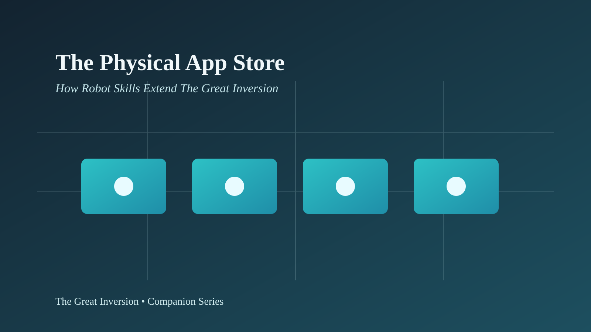

Series Navigation
The Great Inversion | Fifty Years of Paradigm Shifts | The Unreliable Agent | The Burning Question | Current: The Physical App Store | The Inversion, Confirmed | Watch videos
Physical AI Companion
From mobile apps to AI skills to robot skills: the distribution model is crossing from software into embodied behavior.

Cover image for this companion chapter.
Why "robot skills" may become one of the next major inversions in artificial intelligence.
For decades, we got used to thinking of an app as something that lives inside a screen. We install an app and the phone can suddenly do something new: edit photos, call a ride, manage a bank account, translate text, control a light, organize a trip.
Then came AI agent skills. A skill is no longer just an app with buttons. It is a package of instructions, examples, scripts, domain knowledge, and procedures that changes how a model works. Instead of explaining the same process over and over, we teach the agent once and let it invoke that knowledge whenever needed.
Now a third layer is beginning to emerge: skills for robots.
This is where Unitree's novelty deserves attention. The Chinese company launched UniStore, presented as a platform where users and developers can discover, publish, and install actions or tasks for robots in its lineup. The first apps seem to focus mostly on movement: dances, gestures, martial arts, demonstration routines. But the historical significance is not in the dances. It is in the distribution model.
UniStore was presented as a kind of app store for robots. According to multiple sources, the platform allows users to search, download, and install motion or task packages on Unitree robots through a mobile app. Some descriptions point to support across several models, including humanoids and quadrupeds, although the degree of availability varies by region, model, and rollout phase.
The described features are organized around four main blocks:
This last point matters most. A robot dance may look like a viral curiosity. A developer center, by contrast, points to a platform strategy.
A mobile app store distributes software that changes a digital interface. A robot-skill store distributes physical behavior.
The difference is simple, but profound.
| Type of skill | What it changes | Main risk |
|---|---|---|
| Traditional app | Features on a screen | Privacy, security, lock-in, poor user experience |
| AI skill | Cognitive behavior of an agent | Plausible errors, overconfidence, improper digital actions |
| Robot skill | Physical behavior of a machine | Collision, material damage, human harm, legal liability, operational failure |
When I download a skill for a coding agent, I can make it write better tests, generate documentation, or follow an internal process. If that skill fails, I may lose time, produce bad code, create vulnerabilities, or drive wrong decisions. That is already serious.
But when I download a skill for a robot, I am not just changing text, files, or digital decisions. I am potentially changing trajectories, forces, balance, speeds, object interaction, and proximity to people.
It is one thing for an agent to suggest a bad refactor. It is another for a robot to execute a bad trajectory next to a child, an elderly person, a worker, or a shelf full of fragile material.
In the article The Great Inversion, the central idea was that artificial intelligence did not eliminate engineering; it relocated it. When writing code becomes cheap, the hard part is no longer typing implementation details, but specification, verification, supervision, architecture, and accountability.
With robot skills, that inversion becomes even more visible.
In software, the problem was:
In robotics, the problem becomes:
It is the same logic, but with more concrete consequences. If AI-generated code requires tests, review, permission boundaries, rollback, and observability, a robotic skill requires even more: simulation, safety zones, force limits, certification, telemetry, emergency stop, legal accountability, and real-world validation.
The great inversion therefore rises another level:
What used to be "generate a function" becomes "install a behavior."
The parallel with the iPhone is inevitable. The iPhone became more than a phone when a platform emerged where third parties could distribute apps. Innovation stopped being concentrated only in the manufacturer. It started coming from thousands of developers, companies, and users who discovered uses Apple would never have created alone.
Unitree seems to be attempting an early version of that strategy for robots: sell hardware accessible enough to create an installed base; open room for third parties to create actions; allow users to install capabilities without deep programming; and, over time, turn the robot from product into platform.
If this works, value no longer sits only in the robot as a mechanical object. It shifts to the ecosystem of capabilities it can receive.
Today, a skill may be a dance. Tomorrow, it may be a visual inspection routine, a lab training sequence, an educational task, a manipulation simulation, a reception function, an inventory routine, or a behavior adapted to a factory.
But there is an essential difference: mobile phones could scale quickly because the cost of failure was almost always digital. With robots, the world is not a screen. The world has weight, friction, people, obstacles, surprises, different floors, fragile objects, animals, children, liquids, stairs, dust, doors, and laws.
There is a natural temptation when talking about humanoids: jumping from demonstration to fantasy. We see a robot kick, dance, stand up from the floor, or do a spin and immediately imagine a full domestic assistant.
But a movement sequence is not the same as a robust capability.
A choreographed routine may work very well in a controlled scenario and fail in a slightly different environment. A robot may reproduce an impressive movement without understanding human intent, adapting to an obstacle, assessing risk, handling fragile objects, or recovering from an unexpected situation.
This distinction is crucial:
| Demonstration | Capability |
|---|---|
| Shows that something is possible in a prepared scenario. | Works repeatedly across varied contexts. |
| Can be optimized for video. | Must survive noise, error, wear, and unpredictability. |
| High marketing value. | High operational value. |
| Focus on "wow." | Focus on reliability. |
So the important question is not, "Can this robot do a dance?" The important question is, "Can this ecosystem turn isolated motions into verified, safe, reusable, economically useful capabilities?"
In the world of digital agents, we have already learned that guardrails are not guarantees. An agent can ignore instructions, misinterpret a task, call the wrong tool, execute an improper action, or sound confident when it should hesitate.
With robots, this problem stops being merely semantic. It becomes mechanical.
A serious robot-skill platform will have to answer much harder questions than a traditional app store:
The comparison with Claude or Codex skills helps, but it can also mislead. A digital skill packages procedural knowledge. A robot skill packages situated action. The first needs context control. The second needs control over context, body, and environment.
UniStore does not appear in a vacuum. It fits into a broader trend: the attempt to build models, datasets, and platforms that let robots learn reusable capabilities.
In recent years, projects such as Open X-Embodiment have tried to combine data from many robots, tasks, and environments, asking whether it is possible to train generalist policies that transfer learning across different machines. Nvidia, for its part, has invested heavily in "physical AI," simulation, world models, and foundation models for humanoids.
This suggests a future layered architecture:
The app store is therefore only the visible part. Behind it there will be heavy infrastructure: sensors, data, simulation, GPUs, testing, telemetry, versioning, security, and accountability.
This is the natural link to another theme already discussed in the series: artificial intelligence is not ethereal. It has a physics. It consumes energy, hardware, capital, data, and human labor. "Physical AI" makes that materiality even more obvious: AI stops living only in servers and becomes embodied in motors, joints, batteries, sensors, and bodies.
The most likely path is not an immediate explosion of household robots doing everything. It is more gradual.
Dances, gestures, martial arts, viral videos, and expressive motions. This phase may look superficial, but it is useful: it creates attention, community, public testing, and familiarity with the idea of installing behaviors.
Universities, labs, technical schools, and independent developers use robots as experimentation platforms. Here, the skill store can accelerate learning, example sharing, datasets, and routine reuse.
Warehouses, factories, inspection, events, commercial demonstrations, and repetitive tasks in bounded spaces. These are more promising scenarios than the average home, because the environment can be prepared, mapped, and monitored.
In the long run, we may see certified skill packs: safety inspection, inventory, reception, specialized cleaning, logistics support, lab assistance, physical training, or educational guidance. But this will require standards, audits, insurance, and integration with real processes.
For developers, this evolution is fascinating. For decades, programming meant turning intent into software. With AI agents, programming increasingly means defining intent, constraints, tests, and context. With robot skills, that intent can reach physical machines.
The developer of the near future may not write every motor-control detail. But they will need to understand:
It is not the end of engineering. It is one more migration of its center of gravity.
Before, we asked, "How do I write this code?"
Then, we started asking, "How do I correctly specify what the agent should generate?"
Now, we will begin asking, "How do I authorize, verify, and supervise a capability that turns into physical action?"
When artificial intelligence is in chat, risk is mostly informational. When it is in an IDE, risk becomes operational: it changes code, files, infrastructure, and data. When it enters a robot, risk becomes bodily.
That is why the critical layer of robot skills will not be just the store. It will be the governance system.
A platform like this will need to solve at least six problems:
This is the robotic equivalent of what already happens in modern software with dependencies, supply chain, permissions, CVEs, updates, and rollback. Except now the package does not install code only. It installs behavior.
UniStore may end up being only an early, limited, imperfect experiment focused heavily on entertainment. Or it may be remembered as one of the first visible signs of a larger shift: the transformation of robots into platforms programmable by external ecosystems.
The most prudent stance is to avoid both naive enthusiasm and automatic cynicism.
Yes, there is a lot of marketing. Yes, real autonomy remains difficult. Yes, a dancing robot is not a full domestic assistant. Yes, physical risks are huge. But it is also true that many revolutions began with toys, demos, developer kits, and seemingly trivial applications.
The PC began as an enthusiast curiosity. The web began with simple pages. The smartphone began with apps that looked small. Generative AI began with text and images. Now, the frontier shifts toward machines capable of acting.
That is the next great inversion. When capabilities become modular, downloadable, and shareable, the physical world starts to approach software logic. But unlike software, the physical world is far less forgiving.
So the final thesis may be this: robot skills can make robots more programmable, but only a new engineering of trust can make them acceptable.